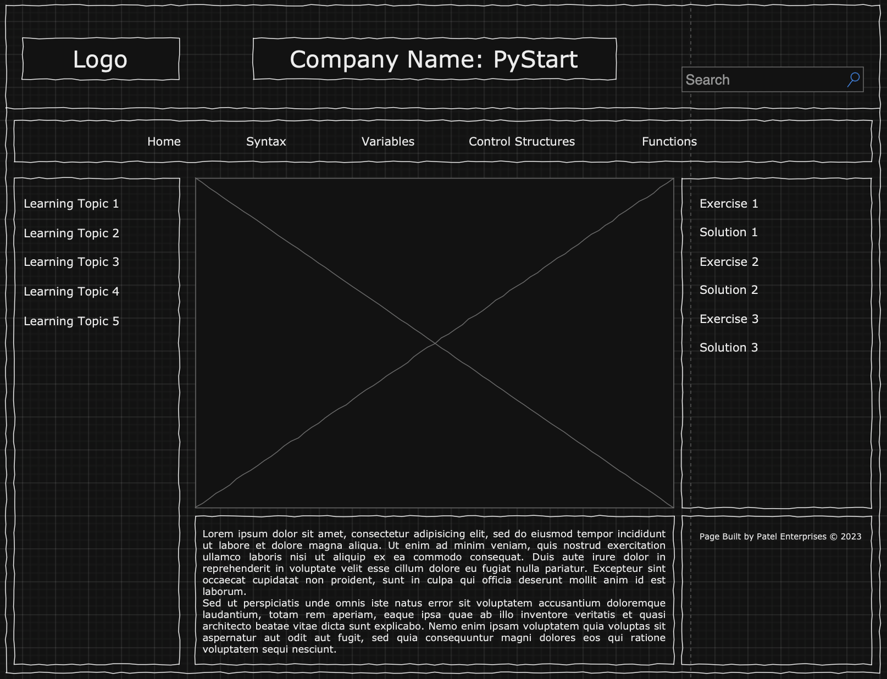

Project 1
Project Overview
For my client project, I will be building a web-based application that teaches the basics of python. This website is intended for people with little to no prior programming experience. The website will offer a structured curriculum covering the basic concepts of Python including syntax, variables, control structures, and functions. The website will have interactive exercises so that my client can apply Python in practical scenarios.
Client Information
- Client: Isha Patel
- Organization: UNC Chapel Hill
- Email: [Private]
- Phone: [Private]
Wireframe
Site Map

Home Page
- Name: Home Page
- Purpose: The purpose is to introduce the website and provide an overview of the content and features available.
- Audience: The audience is anyone who is instrested in learning the basics of Python.
- Content: The homepage will welcome the user with a greeting and explain the course curriculum. There will be a user survey form asking clients about their coding background and to submit feedback for bugs and other general feedback.
- Is this a page where you are asking users to enter data on the page? No data will be entered on this page besides the form.
- Will those data fields need any validations (if any)? N/A
- Hyperlinks and/or Dropdowns: There won't be any hyperlinks on this page, however there will be dropdowns for each webpage.
- Actions: Clicking on a webpage naviagtes the user to that page, so syntax would take the user to that page.
Syntax Page
- Name: Synax Page
- Purpose: Users can come here to learn more about Python syntax.
- Audience: Beginners looking to understand the language's syntax and fundamental principles.
- Content: This page will provide interactive coding examples where users can experiment with Python syntax in a code editor embedded on the page. It will also include visual representations and animations to explain complex concepts in an engaging way.
- Is this a page where you are asking users to enter data on the page? Yes, users can enter Python code snippets for practice.
- Will those data fields need any validations (if any)? N/A
- Hyperlinks and/or Dropdowns: Include links to related topics, exercises, and maybe a "Syntax Cheat Sheet" for quick reference.
- Actions: Users can practice writing Python code, receive real-time feedback, and navigate to other relevant syntax topics.
Variables Page
- Name: Variables Page
- Purpose: Users can explore the concept of variables in Python.
- Audience: Beginner programmers who are new to Python and programming in general.
- Content: Provide visual representations of variables and their values, along with interactive examples that allow users to change variable values and observe how it affects the program's output. Include scenarios where they can use variables creatively, such as in simple games or animations.
- Is this a page where you are asking users to enter data on the page? Yes, users can create and manipulate variables in a code environment.
- Will those data fields need any validations (if any)? The page can validate user input for correct variable assignments and operations.
- Hyperlinks and/or Dropdowns: Include links to related topics like data types and variable naming conventions.
- Actions: Users can explore, create, and manipulate variables in an interactive environment.
Control Structures Page
- Name: Control Structures Page
- Purpose: This page aims to teach beginners about control structures, such as loops and conditional statements.
- Audience: Beginner programmers who are new to Python and programming in general.
- Content: Provide visually engaging flowcharts for common control structures and interactive code examples.
- Is this a page where you are asking users to enter data on the page? Yes, users can modify conditions and loops within code examples.
- Will those data fields need any validations (if any)? Provide feedback on the correctness of user-modified code.
- Hyperlinks and/or Dropdowns: Include links to related topics like nested loops and if-else statements and offer a flowchart playground for users to grasp control flow and conditionals concepts.
- Actions: Users can experiment with control structures and understand how they affect program execution.
Functions Page
- Name: Functions Page
- Purpose: This page aims to teach beginners about Python functions.
- Audience: Beginner programmers who are new to Python and programming in general.
- Content: Provide visual representations of functions and parameters, and allow users to create their own functions within the page.
- Is this a page where you are asking users to enter data on the page? Yes, users can write their own Python functions.
- Will those data fields need any validations (if any)? Validate user input for syntax and provide immediate feedback.
- Hyperlinks and/or Dropdowns: Include links to related topics like return values and function libraries.
- Actions: Users can create and experiment with functions and learn how to use parameters.
Dynamic Functionality
The website will have a code editor embedded on each page, allowing users to write and execute Python code directly on the page. The code editor will also provide real-time feedback on the user's code and highlight syntax errors. The code editor will be implemented using the Ace Editor library or CodeMirror.